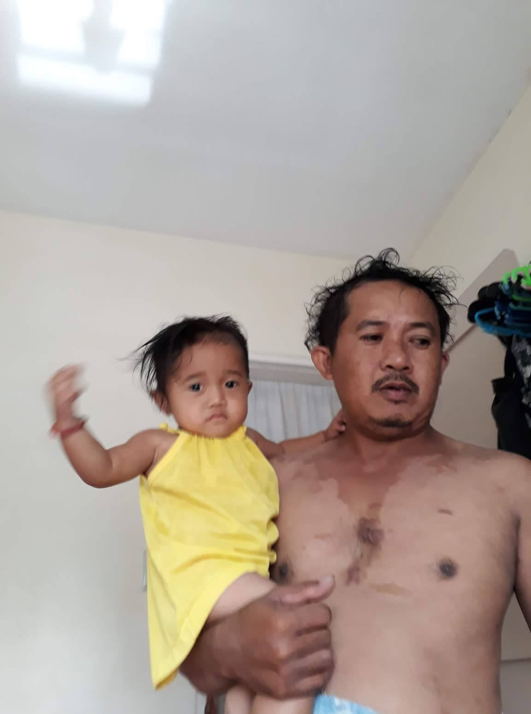
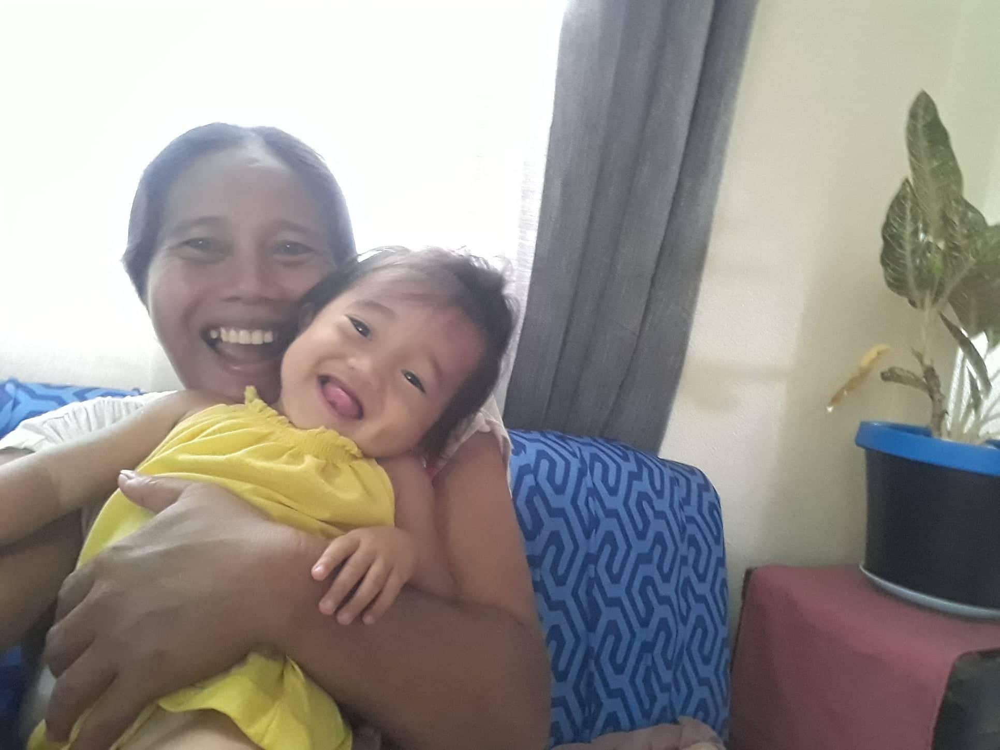

In my family were 6 members. My father Alberto Baugbog, my mother Anita Baugbog and my 3 sisters. I grew up in a simple environment, less individuals are in the area. Raised to respect others, improve oneself, and have aspirations in life. Other things may change us, but we start and end with the family. Having somewhere to go is home. Having someone to love is family. And having both is a blessing.

This little children are the families happiness and hope. They make my parents laugh or make their day better when they have a bad day. They love to play always even its so hot but what can I do their child they love to play. Sometimes they faught too when they dont understand each other especially in toys and foods.